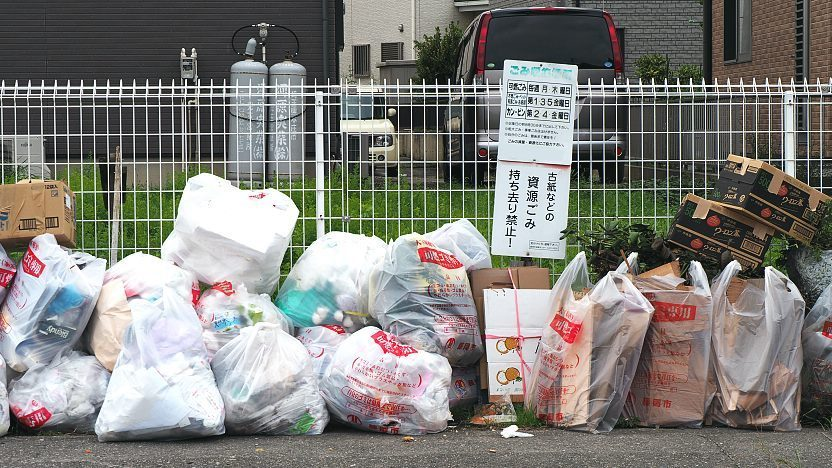
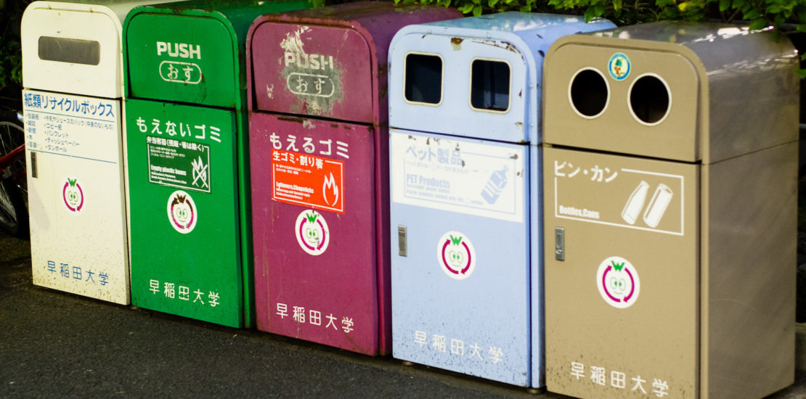

Nhật Bản được biết đến là một trong những quốc gia có môi trường sống sạch sẽ và ngăn nắp hàng đầu thế giới. Một trong những yếu tố quan trọng góp phần tạo nên điều này chính là hệ thống phân loại rác thải khoa học và chặt chẽ. Không chỉ dừng lại ở quy định của chính phủ, việc phân loại rác còn trở thành thói quen và ý thức của mỗi người dân.
Nếu bỏ rác không đúng loại hoặc sai ngày, nhân viên thu gom có thể:
Trong một số trường hợp vi phạm nhiều lần, người dân có thể:

Để đảm bảo việc phân loại rác được thực hiện nghiêm túc, nhiều khu dân cư tại Nhật Bản áp dụng các biện pháp giám sát như:
Ngoài ra, trên túi rác thường có ký hiệu hoặc thông tin khu vực, nhờ đó có thể xác định người vi phạm khi cần thiết.
Một điểm đặc biệt tại Nhật Bản là số lượng thùng rác công cộng trên đường phố khá ít. Điều này xuất phát từ việc người dân được khuyến khích mang rác về nhà để tự phân loại và xử lý.
Một số lý do chính bao gồm:
Mặc dù có ít thùng rác công cộng, nhưng nhờ ý thức cao của người dân, đường phố Nhật Bản vẫn luôn sạch sẽ và gọn gàng.
